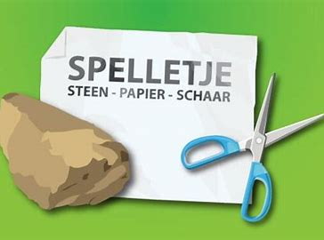

steen papier schaar
Steen,papier,schaar heb ik geprogammeert met 3 inputs knop A, Knop B en A+B. knop A daar heb ik een variable gezet genaamd speler_A en die wordt ingesteld op een willekeurige getal tussen 1 t/m 3 en en als die op 1 komt toont de micro;bit een schaar, bij 2 steen en bij 3 toont de micro;bit papier. zelfde geldt voor knop B en bij Knop A+B toont de micro;bit wie er heeft gewonnen doormiddel van if-statements die controleren wie heeft gewonnen. dus door op Knop A te drukken kies je en door op knop B te drukken speelt je vriend en door allebei tegerlijk in te drukken zie je wie heeft gewonnen
Catch the appels
Catch the appels is een spel waar je de "appel" moet vangen die op een willeurige plek van het X-ass valt het Y-ass blijft het zelfde op 0 dus. Door op knop A te drukken beweeg je de playersprite naar links en door op knop B te drukken beweeg je de playersprite naar rechts om het appel te vangen.
